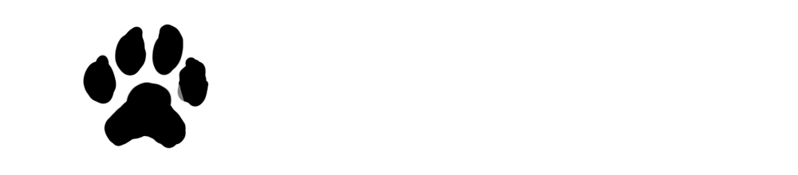
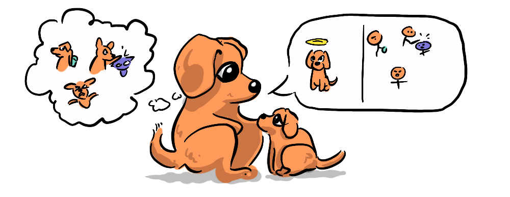
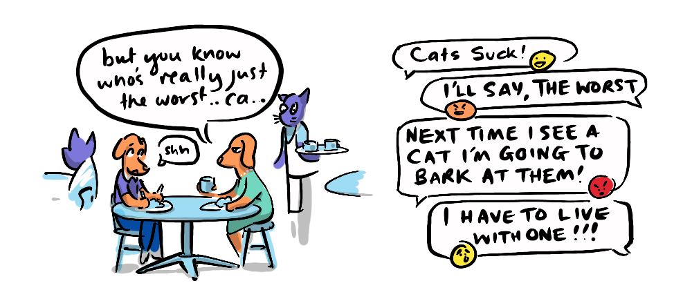

 There's a battle in the field of ethics between three approaches—Consequentialism, Virtue Ethics and Deontology, but this framing is all wrong, because they're all on the same side. By treating ethics as an adversarial all-or-nothing (zero-sum) debate, we are throwing out great deal of baby for the sake of very little bathwater.

First of all some (very basic) definitions.
- Consequentialism: holds that the morality of an action is determined by its outcomes (or more specifically its expected or intended outcomes) in terms of what we value. Utilitarianism, a prominent form of consequentialism, explicitly formulates this in terms of the increase in utility (happiness) and the avoidance of harm (suffering).
- Virtue Ethics: holds that the morality of an action is derived from the motivation for that action, is it virtuous or vicious? Moral virtues like courage, compassion, humility, and vices such as cowardice, cruelty and arrogance, have been codified by philosophers from all cultures back to Confucius and Aristotle and continue to be updated with virtues today generally focused on greater inclusivity.
- Deontology: holds that the morality of an action is derived by its adherence to rules, rights or duties, whether religious or social.
The way I see it, there is no conflict between these three approaches, they simply represent different levels of focus, which are applicable to different sorts of situations. They are not only compatible, but also complimentary and interdependent.
… and what makes something a vice rather than a virtue? Take compassion and cruelty, opposites on the virtuous spectrum. Would it make sense to swap these and make compassion a vice and cruelty a virtue? Is it arbitrary? There have been times in history where these may have been reversed, but why?

Imagine a society where children are taught to be cruel, perhaps to hurt and hunt animals, to fight and hurt each other. Why would this happen?
Well, what if they needed to be prepared for a harsh world, full of actual threats coming from violent neighbouring tribes? In this society compassion might be a liability, trusting your neighbour might lead to the death of you and your family, your capacity for cruelty might be necessary in order to avoid conflict with others (via intimidation). This is an extreme example, but it shows that to reverse a norm, you need extreme opposing consequences .
The example is not meant to suggest that cultures in the past were all like this, it's just to illustrate that, given certain conditions we can see how such social values could arise. It also isn't meant to entirely exonerate modern societies from spreading some cruel messages to our progeny. But in today's society, thankfully, compassionate behaviour is generally not a liability, and leads to much greater well-being for each other, and most of the time cruelty is also generally abhorred. Is it a coincidence then that cruelty in our society generates suffering and is abhorred and compassion creates greater well-being and is celebrated? I would suggest not. This is because the moral foundation of virtues is essentially consequentialist.  What we are doing here is actually using consequentialism to inform virtue ethics—saying "if people act with these virtues and avoid these vices, everyone will be better off". This not only holds for us, but also our unfortunate hypothetical tribe. But if virtues are derived this way, why not simply default to consequentialism? Not so fast. For the next section I'll use Utilitarianism as the Consequentialist position of choice.
For the strident Utilitarian, analysis is complex and time-consuming, not always practical for informing actions in-the-moment. Virtues are essentially rules of thumb or general principles that can be quickly applied to situations. We can act confidently on virtues secure that we have a good (consequentialist) foundation for them, without having to run a complex calculus each time we face a new situation.
Another key quality of virtue ethics is that it makes our actions more predictable. If we were to run an individual utilitarian calculus on each situation, we might find ourselves making self-serving decisions in some situations and not in others, meaning we might not be able to be trusted to do the virtuous thing, if there isn't a threat of consequences in a particular situation. For instance, feeling a pang of hunger as one leaves a store when the attendant has left, might lead us to swipe a chocolate bar on the way out, because the cost-benefit analysis in this particular situation might reveal that eating the chocolate bar would bring us far greater pleasure than the shop owner's pain. Where as a virtue of honesty would make this a no-brainer—don't steal.
Does this make consequentialist ethics wrong?
Not at all, because we can understand that such "vice"-ious behaviour would lead to a low-trust environment over all, where we lose the benefits of a high-trust society. Consistency, integrity and trust are features of a healthy society that mean people don't have to constantly be looking over their shoulder. From a utilitarian perspective a high-trust environment has far greater utility than a low-trust one, and so, once again we see that virtues are themselves justifiable using consequentialist logic.
 The problem happens when a grumbling tummy in-the-moment or a fit of rage can curtail our ability to play out the entire utilitarian calculus. We are not moral robots after all, we are primates.
The problem happens when a grumbling tummy in-the-moment or a fit of rage can curtail our ability to play out the entire utilitarian calculus. We are not moral robots after all, we are primates.
This brings us to the question—why are we like this? Why don't we act "right" automatically? We have evolution to thank for many positive qualities, from our intelligence and ability to communicate, our dexterity and ability to build things, and moral qualities like our capacity for empathy, courage and love. But for the million or so years that nature was determining what it was to be human, it was doing so in an entirely different environment than the one in which we now live (the one we have made for ourselves). Our modern environment caters to many of our needs for security, shelter, food and health—our evolutionary environment did not, it was full of many immediate threats to security, constant scarcity and where a scratch against the wrong branch could lead to a painful death. Like our hypothetical tribe who, out of necessity, raise their children to be cruel, there are many instincts we evolved that prepared us for a much more dangerous environment, and in turn make us much more dangerous than necessary. 
If we had not had such a history, and were moral robots, we could easily just trust our programming to logic our way to pro-social behaviour, but for better or worse that is not our lot. Our neat little consequentialist-virtue ethics synthesis may help us understand what comprises "good" behaviour, but it is not enough to guarantee we will actually act in accordance with it. So, we need (some) rules for when our instincts lead us to behaviour that is destructive to the way of life we share today, and that's where Deontology comes in.
Deontology is in the business of building a list of the specific rules, duties and rights that are essential for order, where transgression is an absolute no-no. And we have such a list of such rules, they're called laws.
Now, we can see that the legal system is going to be dependent on consequentialist logic (generally) to derive these rules, after all "disorder"—that which laws seek to avoid, is a consequence of lawlessness, and disorder is assumably bad because it leads to a range of other negative consequences for individuals: getting murdered etc. So, could we do away with virtue ethics in favour of a much more specific consequentialist-deontological paradigm?
 Well, once again we run into an issue of capacity, in the same way as it is impractical to run a full utilitarian calculus on a situation in-the-moment, it is practically impossible to list every possible transgression (no matter how minor), let alone monitor those transgressions. When I said that we need "some" rules, this is because rules are potentially infinite. They are also context specific—punching someone in the face in a boxing match for example is very different from doing the same thing in the street. One you get paid for, the other gets you arrested. So, every rule needs further caveats and conditions to be taken into account, making complete ethical accounting unfeasible.
Well, once again we run into an issue of capacity, in the same way as it is impractical to run a full utilitarian calculus on a situation in-the-moment, it is practically impossible to list every possible transgression (no matter how minor), let alone monitor those transgressions. When I said that we need "some" rules, this is because rules are potentially infinite. They are also context specific—punching someone in the face in a boxing match for example is very different from doing the same thing in the street. One you get paid for, the other gets you arrested. So, every rule needs further caveats and conditions to be taken into account, making complete ethical accounting unfeasible.
Laws are therefore necessarily limited in scope to crimes—actions that cannot be tolerated in a functioning society. It's simply impractical (and over-kill) to apply this approach to anti-social behaviour in general, and then there's good behaviour to which laws don't have any relevance (unless you're already in prison, and can reduce your sentence "based on good behaviour"). Virtue ethics applies to all good and bad behaviour, including behaviour that doesn't reach the legal threshold.

The way I see it, these three approaches to ethics are all necessary and interdependent. We need a consequentialist foundation like Utilitarianism to determine Virtues and Laws, we need Virtues to create a society that can act cohesively and with predictable outcomes, and we need Laws to guard against our anti-social evolutionary instincts. Meanwhile the practical benefits of virtues and laws in their respective domains fit into a larger consequentialist calculus, one that we can adjust based on a changing social environment. In short, debates about the merits of different ethical foundations are all well and good, but by looking at the issue from a non-zero-sum perspective, where the whole can be greater than the sum of its parts, we can appreciate a mutually beneficial synthesis that incorporates the benefits of all three approaches.